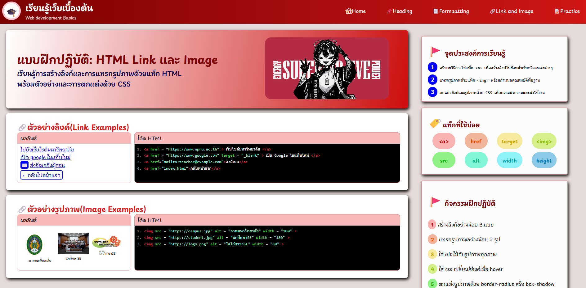
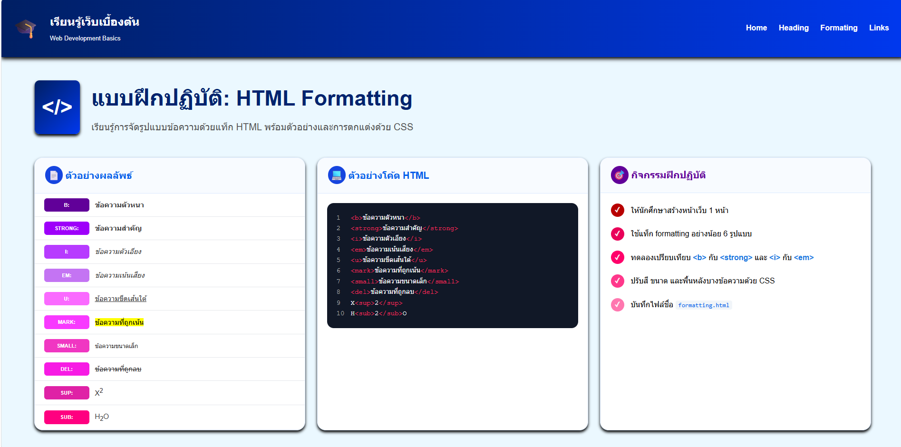
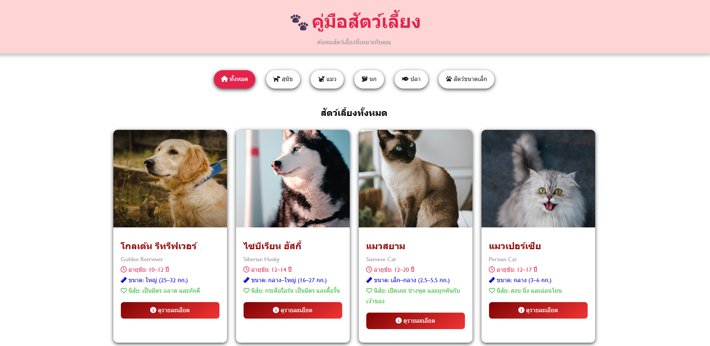

HTML Tutorial
- เว็บไซต์รวบรวมสารบัญบทเรียน HTML พื้นฐาน (Topics Index)
- จัดหมวดหมู่หัวข้อความรู้ เช่น โครงสร้างเอกสาร, ลิงก์, ตาราง, ฟอร์ม และ Semantic HTML
- แสดงสรุปเนื้อหาพื้นฐานเกี่ยวกับการทำงานของ HTML และเว็บเบราว์เซอร์

- เว็บไซต์รวบรวมสารบัญบทเรียน HTML พื้นฐาน (Topics Index)
- จัดหมวดหมู่หัวข้อความรู้ เช่น โครงสร้างเอกสาร, ลิงก์, ตาราง, ฟอร์ม และ Semantic HTML
- แสดงสรุปเนื้อหาพื้นฐานเกี่ยวกับการทำงานของ HTML และเว็บเบราว์เซอร์

- ฝึกสร้างลิงก์เชื่อมโยง เช่น ลิงก์ภายนอก, เปิดแท็บใหม่ (target="_blank") และลิงก์ส่งอีเมล
- แทรกรูปภาพพร้อมกำหนดคำอธิบาย alt สำหรับ Accessibility
- ตกแต่งเอฟเฟกต์รูปภาพด้วย border-radius และ box-shadow พร้อมทำระบบ Hover ลิงก์

- ฝึกการจัดรูปแบบข้อความด้วยแท็ก HTML เช่น <b>, <strong>, <i>, <em>, <mark> และ <sup>/<sub>
- เปรียบเทียบความแตกต่างการแสดงผลและ Semantics ของแท็กข้อความ
- ตกแต่งเปลี่ยนสี ขนาด และสีพื้นหลังของข้อความด้วย CSS

- ออกแบบหน้า UI แสดงรายการข้อมูลสัตว์เลี้ยง (Pet Cards Layout)
- มีระบบปุ่มกรองหมวดหมู่สัตว์เลี้ยง (Filter Bar) เช่น สุนัข แมว นก ปลา
- แสดงข้อมูลการ์ดสัตว์เลี้ยง ประกอบด้วยรูปภาพ, สายพันธุ์, อายุขัย, ขนาดตัว, นิสัย และปุ่มดูรายละเอียด